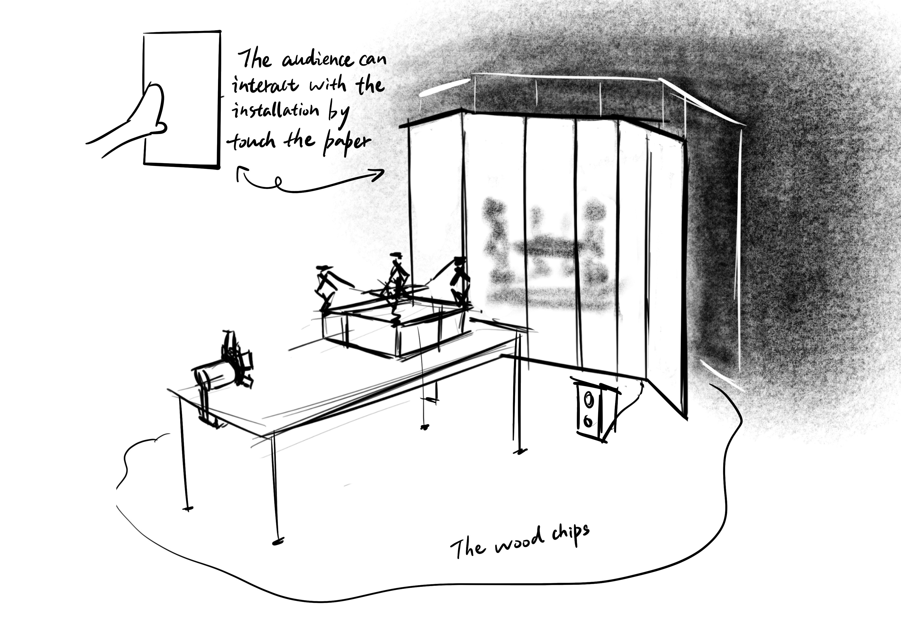
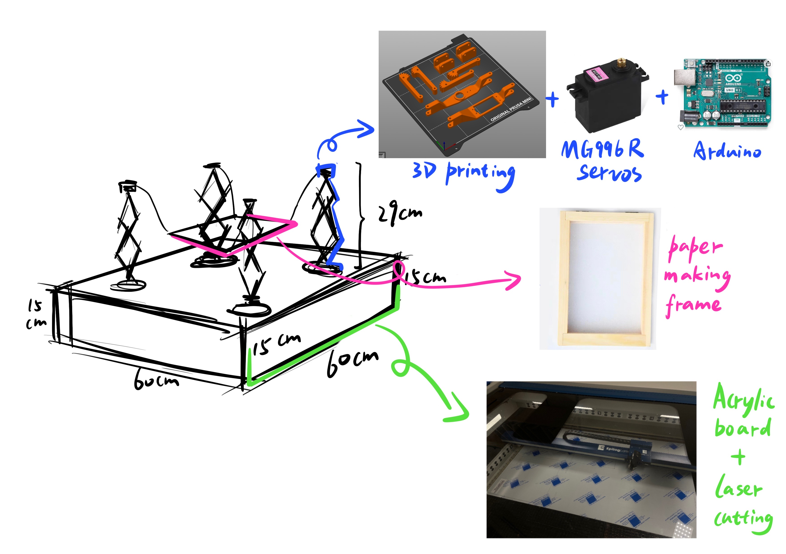
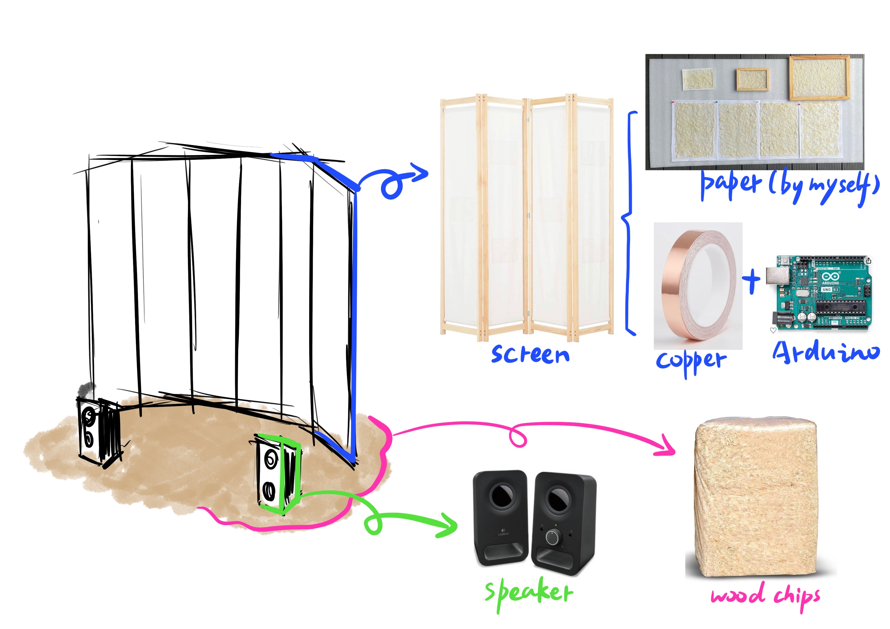
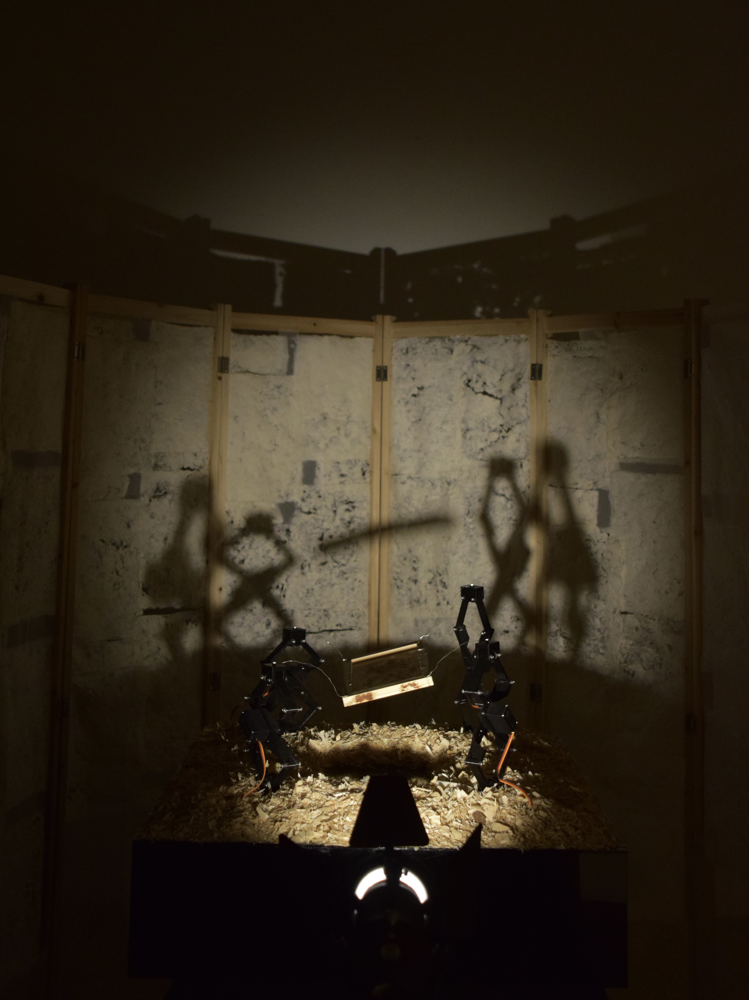

Introduction
With the prevalence of digital communication media, paper as a real communication medium is being replaced by digital virtual media, and human beings are gradually moving from reality to virtual in this process. However, the origin of human beings is based on reality rather than virtual, so I try to use paper as the main medium for the audience to re-examine the relationship between virtual and real, and to re-feel and return to the origin of human beings.
Concept and Background Research
Today, in a digital society, the use of mobile devices is increasing year on year and according to the latest data from my research, the average person spends 3 hours and 15 minutes a day
People seem to be using paper less and less. In the past, when we needed to know something or record some information, we needed to do it through the medium of paper. Nowadays, many people have become accustomed to digitising their personal information, taking notes, socialising and even drawing on digital devices such as mobile phones, computers and tablets. A great deal of personal information is being virtualised, and human beings are perhaps unknowingly going virtual in the process.
This also brings me to the question: when the carriers of digitised information are intentionally or unintentionally terminated, does this mean that our past disappears with them? Where else can I find the information that proves I existed? Will mankind's reliance on the digitisation of information become a time bomb that destroys the evidence of mankind's existence?
Paper comes from pulp, which comes from wood, just as people come from cells, which come from molecules. It all needs to be grounded in reality, we are not virtual, we live in reality. So perhaps we should revisit these mediums of recording information, especially the distinction between real and virtual media, and in doing so, rethink and reflect on the relationship between the digitisation of the human ontology and reality.
Technical Implementation
Project idea
In my opinion, paper is the key real media to counter the digitisation of human information. For this reason, I will use paper as the core and multi-sensory interactive installation as the form of expression, trying to guide the audience to re-examine and rethink the relationship between the virtual and the real.
The overall idea behind the design of the work is to draw the viewer's attention to the medium of paper and to rethink and re-examine the crisis of the prevalence of digital media in today's society through the use of paper and its origins, such as pulp and wood shavings.
The whole installation is divided into three parts, the first part is a physical installation composed of a robotic arm, a paper copying frame and acrylic material, the second part is an interactive installation composed of paper and a screen, and the third part is a shadow generated by the light running through the two installations. In addition, on the floor of the installation area, I spread wood shavings, hoping to bring a sense of touch and taste to the audience.
The physical installation
Idea：This installation is about the relationship between digital technology and paper. In this installation, I use mechanical arms as a vehicle for digital technology, which constrain the movement of the paper making frame and prevent it from moving. It is as if, in the context of today's digital media, the reduction of paper users has led to a reduction in its production. If in the future we rely entirely on digital media, production will stop and paper will be forgotten or even disappear.
Technical：In this installation I designed a robotic arm and used a 3D printer to print out its parts and mount them in conjunction with the MG996R servos, which was then mounted with a laser cut acrylic plate. In addition, I used an Arduino board for control in the setting of the robotic arm movement.

The interactive installation
Idea：This installation is a sound interactive installation where the viewer can interact with the paper by touching it and getting sound feedback. In this installation, I want to make the audience focus more on the paper through hearing and touching, and try to make the audience forget the digital information for a while and return to reality in this way.
Technical：In the creation of this installation, I first spent about a month making paper, which I then combined with conductive copper wires to create a "touch sensor" that was connected to an Arduino to generate data, and then connected to MAX to control the sound effects so that the viewer would get some audio feedback when touching the wet paper in the installation.

Shadow
Shadow is the product of light that connects the two devices and is a vehicle for hope. In the image of the shadow, when the light passes through the paper and casts a texture on the wall, it is like a shadow under a large tree, or an environment where only a ray of hope survives and is shrouded in darkness. It seems to me that the light that passes through the paper is like hope that is fighting against the process of digitisation and that the viewer can destroy the paper by touching it, allowing more light to appear in the shadows.
Reflection and Future Development
Reflection
In the conception and creation of this work, my first installation was originally set to be a physical installation with a transparent acrylic box filled with water and pulp, but after practical testing and rethinking my own ideas, I decided to remove the acrylic box. This was a big challenge for me, as it involved the whole design of the work and the physical installation, but I am glad that I overcame this challenge, which brought me a lot of inspiration and experience, and also opened up my mind to create this series of works.
Future Development
Nowadays, human beings are gradually moving towards virtualisation in the context of the digital era. In my opinion, this is an issue with the characteristics of the times, and it is also a very worthwhile issue to explore and think about, so in the future I will continue the idea of this work to make more works, put more real media and digital media into the works of dialogue, trying to find more interesting “answers".
References
1.Web Research: https://explodingtopics.com/blog/smartphone-usage-stats
2.code reference：https://www.arduino.cc/reference/en/language/functions/random-numbers/random/
3.Coleman, Rebecca. “Theorizing the Present: Digital Media, Pre-Emergence and Infra-Structures of Feeling.” Cultural Studies (London, England) 32, no. 4 (2018): 600–622.
4. Shibata, Hirohito, et al. "Various Media and Their Characteristics." Why Digital Displays Cannot Replace Paper: The Cognitive Science of Media for Reading and Writing (2020): 15-25.
5. Ollinaho, Ossi I. "Virtualization of the life-world." Human Studies 41 (2018): 193-209.
6.Tolaniová, S. Gáliková. "Antropological risks and the form that evil takes in the electronic media era." Contemporary images of evil (2013): 33-55.